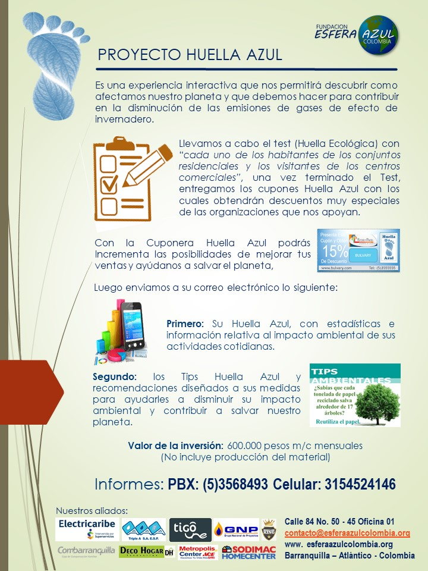

Reciclaje
Programa de Aprovechamiento de Materiales Reciclables Desde Esfera Azul Colombia, apoyamos la gestión empresarial de diferentes organizaciones públicas y privadas, implementando programas de aprovechamiento que disminuyen los costos de los clientes de nuestros aliados estratégicos y a su vez nos permiten fortalecer nuestros programas de educación ambiental. Reciclaje de Metales
Un coche de tamaño medio requiere aproximadamente. 800 kg. de acero y 130 kg. de metales no ferrosos. Si el nivel de propiedad de autos fuere en todo el mundo como en EE.UU., las propia producción automotriz se habría agotado por acabar todos las reservas conocidas de hierro.El reciclaje de los metales contribuye significativamente a no empeorar la situación actual de contaminación. Al reciclar la chatarra se reduce la contaminación del agua, aire y los desechos de la minería en un 70%. Obtener aluminio reciclado reduce un 95% la contaminación, y contribuye a la menor utilización de energía eléctrica, en comparación con el procesado de materiales vírgenes. Reciclando una lata de refresco se ahorra la energía necesaria para mantener un televisor encendido durante 3 horas.
Reciclaje de Papel
Es el proceso de recuperación de papel ya utilizado para transformarlo en nuevos productos de papel. Existen tres categorías de papel que pueden utilizarse como materia prima para papel reciclado: molido, desechos de pre-consumo y desecho de post-consumo. El papel molido son recortes y trozos provenientes de la manufactura del papel, y se reciclan internamente en una fábrica de papel. Los desechos pre-consumo son materiales que ya han pasado por la fábrica de papel, y que han sido rechazados antes de estar preparados para el consumo. Los desechos post-consumo son materiales de papel ya utilizados que el consumidor rechaza, tales como cuaderno viejos y/o revistas viejas, material de oficina, guías telefónicas, etc. El papel que se considera adecuado para el reciclaje es denominado "desecho de papel". Al reciclar 1 tonelada de papel ahorramos 270,000.00 Lts de agua. Por lo tanto, cada kilo de papel que se recupera representa un ahorro de 270 Lts 58.85 Kg de papel y cartón representan 1 árbo Ejemplo: 200 Kg / 58.85 = 3.4 árboles Para fabricar 1 tonelada de papel es necesario talar 17 árboles. Eso quiere decir que de cada árbol se obtienen 58.85 Kg de papel.
Red/CDS
Es una iniciativa que busca articular a las comunidades habitante de los conjuntos residenciales del caribe colombiano, con el propósito de trabajar juntos por un objetivo común, la reducción de gases de efecto de invernadero mediante la promoción y fomento del Consumo Responsable.
Consumir responsablemente es entender que los recursos naturales no son renovables y que las generaciones futuras deben tener las condiciones necesarias para poder vivir. El consumidor elige en el mercado la historia que se contará en el futuro.
La Red/CDS se articulara a diferentes organizaciones con el propósito de fortalecer la gestión de estas comunidades y propiciar cambios no solo a nivel ambiental, sino también a nivel económico, alcanzando un verdadero desarrollo sostenible.
Primer Comité De Desarrollo Sostenible / Implementación ToolBox en el Conjunto Residencial Puerto Alegre en Barranquilla
Proyecto Huella Azul
